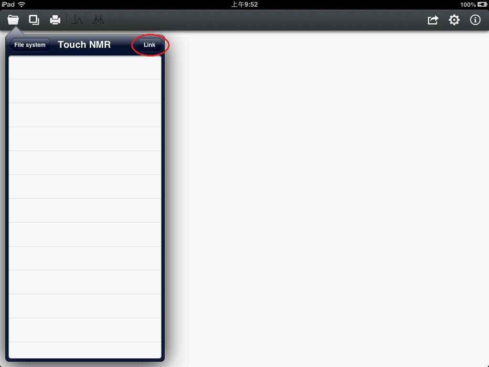
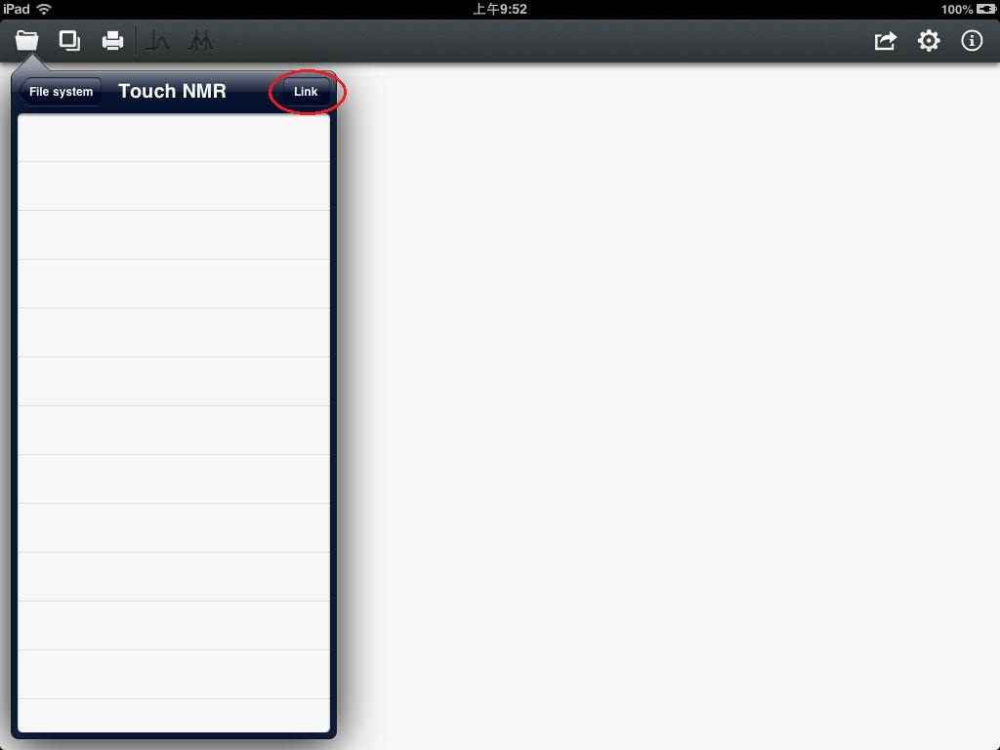

User Guide of Touch NMR
The popular cloud storage technology is implemented. For current version, we use Dropbox, the most popular cloud storage provider. When you are in the file manage system, press the row of "Dropbox" to enter your own account. In case that you never set your account or account information is out of session, you need to press the "Link" button shown in figure 3 to auth again.

Figure 3
You will see the login interface shown in figure 4 after press the Link button.

Figure 4
You are prompted for your Dropbox account information. After logging in, a folder named Touch NMR under App folder in your account will be automatically created. In your later operation of the contents in this synchronized folder, as long as you do "Save to source file" to write processing parameters into files, system will synchronize with Dropbox server automatically.

Figure 3
You will see the login interface shown in figure 4 after press the Link button.
Figure 4
You are prompted for your Dropbox account information. After logging in, a folder named Touch NMR under App folder in your account will be automatically created. In your later operation of the contents in this synchronized folder, as long as you do "Save to source file" to write processing parameters into files, system will synchronize with Dropbox server automatically.